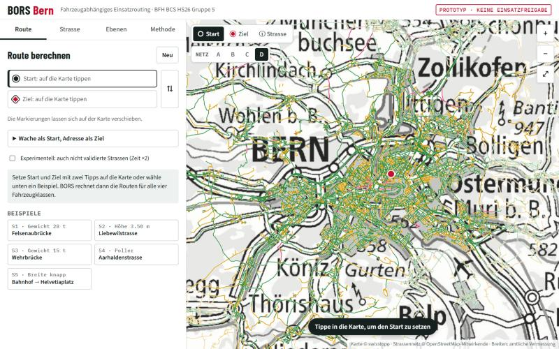
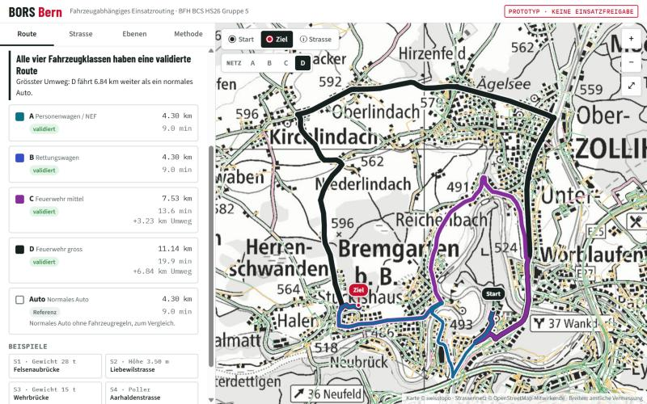

Ich studiere Digital Business & AI an der Berner Fachhochschule, mit Schwerpunkt
Datenanalyse. Mich interessiert, wie Daten und Software im Alltag echte Probleme lösen.
Zahlen begleiten mich schon lange: zuerst in der Bank, dann in einer Passerelle und
im Physikstudium. Heute interessiert mich vor allem die Anwendung, also Mathematik,
die man auf einer Karte oder in einer App sieht.
Ausgleich finde ich im Ausdauersport: Ich trainiere für Triathlon bis zur
Ironman-Distanz, am liebsten draussen in der Natur.
Projekte

Hauptprojekt · Modul BCS
BORS Bern
Einsatzrouting für Blaulichtfahrzeuge: Welche Strasse ist für welches Fahrzeug physisch
passierbar? BORS prüft für Notarzt, Rettungswagen und zwei Feuerwehrfahrzeuge, ob Breite,
Höhe und Gewicht reichen, und berechnet darauf die Route, in Bern und zehn Nachbargemeinden.
Mein Teil: die gesamte technische Umsetzung,
von der Datenaufbereitung und Breitenmessung über den Router bis zur Web-App.
Python
QGIS
SQLite
JavaScript
Geodaten

Beispiel Felsenaubrücke: Notarzt und Rettungswagen fahren direkt,
die grosse Feuerwehr braucht 6,8 km Umweg.Das ganze Netz für die grosse Feuerwehr:
grün validiert, gelb unvalidiert, rot gesperrt.
So funktioniert es
Das Strassennetz stammt aus OpenStreetMap, inklusive Einbahnen sowie Höhen- und Gewichtslimiten.
Die Fahrbahnbreite wird aus der amtlichen Vermessung mit Querprofilen gemessen,
abzüglich Parkfelder, Mauern und Pfeiler.
Jede Strasse erhält pro Fahrzeug einen von drei Zuständen: validiert, unvalidiert oder gesperrt.
Geroutet wird zuerst nur über validierte Strassen. Gibt es so keinen Weg,
zeigt BORS eine gekennzeichnete Ausweichroute.
Die Web-App rechnet im Browser genau gleich wie der Router in QGIS:
325 von 325 Testrouten sind identisch.
Schuldner und Gläubiger der Reihe nach ausgleichen, bis alle Salden null sind.
Gruppenprojekt · Datenmanagement & Datenanalyse
Datenanalyse Lebenserwartung (R)
Regressionsmodelle zum Zusammenhang von Lebenserwartung, Raucheranteil und Einkommen
in 100 US-Regionen.
Mein Teil: der gesamte Analyseteil.
R
Regression
Interaktionseffekte
Ergebnis
Rauchen senkt die Lebenserwartung, und in einkommensstärkeren Regionen ist dieser
Effekt stärker (Interaktion Raucheranteil × Einkommen). Die Modelle habe ich mit
einer Residuendiagnostik geprüft.
Studienkonzept
Unia AI Assistant
Konzept für einen KI-Assistenten, der Unterlagen für die Arbeitslosenkasse erkennt,
auf Vollständigkeit prüft und weiterleitet.
Mein Teil: IT-Architektur (Cloud, APIs, Sicherheit)
und Digitalstrategie (KPIs, Roadmap).
Architektur
Digitalstrategie
Requirements Engineering
2sports
Anforderungen an eine App, mit der man spontan Sportpartner:innen in der Nähe findet.
Mein Teil: Variantenübersicht, Detailanforderungen
und Stakeholderliste.
Requirements
Stakeholder
Servicekonzept
TrainCast
Servicekonzept, das Trainings automatisch in freie Kalenderlücken und trockenes Wetter plant.
Service Design
Wetterdaten
Kontakt
Am einfachsten erreichst du mich über
GitHub oder über dieses Formular.